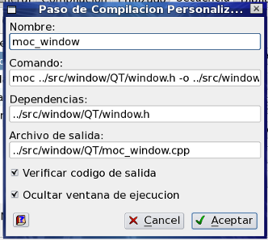

Diálogo Agregar/Editar Paso de Compilacion Personalizado
ZinjaI permite personalizar el proceso de compilación introduciendo pasos adicionales en la secuencia estándar. Para ello debe utilizar la pestaña Secuencia del diálogo Opciones de Compilacion y Ejecucion de Proyecto. El diálogo Agregar/Editar Paso de Compilacion Personalizado permite definir las propiedades y funcionalidades de estos pasos adicionales.

- Cuando se prepara el proceso de compilación, ZinjaI compara las dependencias de cada paso personalizado con su archivo de salida y determina en base las fechas de modificación de cada uno si debe realizarlo o no. Si un paso no tiene dependencias, solo verifica si existe el archivo de salida. Si un paso no tiene archivo de salida se ejecuta siempre (en toda compilación y/o ejecución). Además, si el archivo de salida es uno de los fuentes del proyecto, este tambien se recompilará incondicionalmente.
- En el comando correspondiente a un paso sen pueden usar las variables MINGW_DIR (solo en la versión para Windows) para hacer referencia al directorio donde ZinjaI busca a MinGW (ej: "${MINGW_DIR}\qt\bin\moc window.h o moc_window.cpp") y TEMP_DIR para hacer referencia al directorio de archivos temporales (objetos intermedios) del proyecto. Se debe considerar como directorio de trabajo para cualquier comando o argumento el directorio del proyecto.
- La opción verificar código de salida determina si ZinjaI utiliza el código de retorno del comando a ejecutar para determinar si la ejecución fue exitosa (en cuyo caso la compilación continúa normalmente) o no (en cuyo caso la compilación se interrumpe).
- La lista con las posibles ubicaciones para el paso solo aparece al añadir un paso nuevo. Para mover un paso existente debe utilizar los botones Subir>/I> y Bajar de la pestaña Secuencia del diálogo Opciones de Compilacion y Ejecucion de Proyecto.